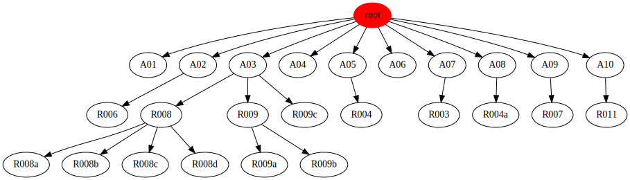

Requirements tree
- A01 I want requirements to be documented in a consistent, structural way.
- A02 I want to track requirement history and create baselines
- R006 tool must have version control
- A03 I want to spend as little time as possible on mechanical tasks, like formatting documents.
- A04 I want to know when all requirement dependencies are satisfied.
- A05 I want each requirement to be traceable
- R004 each requirement must have a unique identifier
- A06 I want an overview that shows ho high-level requirements match final low-level solutions
- A07 I want each requirement to have a clear status, from 'draft' to 'satisfied'
- R003 each requirement must have a status
- A08 I want the tool to check for requirment consistency
- R004a tool must check identifiers for consistency
- A09 I want to easliy cooperate with others on writing requirement documents
- R007 tool must support multiple users
- A10 I want to produce graphic charts visualizing requirement dependancy
- R011 tool must print requirements in a tree structure
Legend
- : check
- : arrow_right
- : conflict
- : handshake
- : requirement
- : solution
Dependencies

Detailed list
A01 I want requirements to be documented in a consistent, structural way.
Rationale: A user (architect or designer) needs to manage requirements of a complex system.
A good requirement management system has a set of high-level requirements
Parent: ROOT
A02 I want to track requirement history and create baselines
Rationale: None
Parent: ROOT
R006 tool must have version control
Rationale: None
Parent: A02
A03 I want to spend as little time as possible on mechanical tasks, like
formatting documents.
Rationale: None
Parent: ROOT
R008 tool must be user-friendly and support "traditional" way of writing requrements.
Rationale: None
Parent: A03
R008a tool must use plain text input
Rationale: None
Parent: R008
R008b tool must enable cross referencing and structuring the requirements
Rationale: None
Parent: R008
R008c tool should support comments
Rationale: None
Parent: R008
R008d tool shoud be able to check if an requirement identifier is available
Rationale: None
Parent: R008
R009 tool must generate requirement documents
Rationale: None
Parent: A03
R009a tool must produce html output
Rationale: None
Parent: R009
R009b tool should produce pdf
Rationale: None
Parent: R009
R009c tool should produce 'skeleton' structures
Rationale: to avoid copy-pasting of previous documents.
Parent: A03
A04 I want to know when all requirement dependencies are satisfied.
Rationale: Quick overview for requirement dependancy.
Parent: ROOT
A05 I want each requirement to be traceable
Rationale: None
Parent: ROOT
R004 each requirement must have a unique identifier
Rationale: needed to link requirements for traceablility
Parent: A05
A06 I want an overview that shows ho high-level requirements match final low-level solutions
Rationale: None
Parent: ROOT
A07 I want each requirement to have a clear status, from 'draft' to 'satisfied'
Rationale: requirements are defined and changed during development process.
Usually a requirement goes through different stages from draft to 'validated' or 'satisfied'
Parent: ROOT
R003 each requirement must have a status
Rationale: typical workflow consists of setting status to 'draft/reviewed/confirmed' or similar.
Parent: A07
A08 I want the tool to check for requirment consistency
Rationale: None
Parent: ROOT
R004a tool must check identifiers for consistency
Rationale: because identifiers are entered by hand, there is a chance of duplicate entries. these are not allowed
Parent: A08
A09 I want to easliy cooperate with others on writing requirement documents
Rationale: None
Parent: ROOT
R007 tool must support multiple users
Rationale: None
Parent: A09
A10 I want to produce graphic charts visualizing requirement dependancy
Rationale: None
Parent: ROOT
R011 tool must print requirements in a tree structure
Rationale: None
Parent: A10